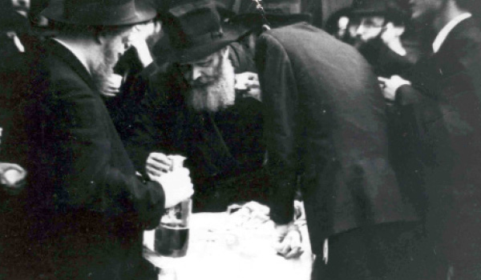

My First Tishrei with the Rebbe
Each time he looked at me with his holy eyes, I was seized by trembling and I lowered my gaze. I tried to prove to myself that this was no dream but I was really standing near the Rebbe. How did I deserve this?
By Rabbi Sholom Dovber Wolpo
Prepared for publication by Shneur Zalman Levin

I particularly remember Tishrei 5726/1965. We arrived at 770 on Thursday, 19 Elul 5725. Our hearts beat rapidly. The moment we had waited for had finally come. We immediately went into the secretaries’ office and I gave R’ Binyamin Klein the letters and the esrogim. When I left the office, the rest of the bachurim arrived from the airport (I had come before them), and they said that the minute they arrived the Rebbe came to 770, and when he got out of the car he turned around and looked at them twice and then entered 770. I missed that and did not see the Rebbe.
I saw the Rebbe for the first time when he came in for Maariv. I was very keyed up and emotional. I made a spiritual accounting and remembered everything that had happened, being immersed in the physicality of eating and drinking, etc. It is a bitter feeling when you know that in another few minutes you are going to have to face the Rebbe, Nasi Doreinu, bare and bereft of everything.
I remember it till today, that at 9:32 the Rebbe came out of his room and entered the beis midrash. In my excitement and great trepidation upon seeing the Rebbe for the first time, I forgot to say the SheHechiyanu blessing, as is customary (I said it later on when I saw him again). The Rebbe looked over the bachurim and guests once and twice. Each time he looked at me with his holy eyes, I was seized by trembling and I lowered my gaze. I tried to prove to myself that this was no dream but I was really standing near the Rebbe. How did I deserve this?
Each of us had submitted a note to the Rebbe in which we informed him of our safe arrival and requested a bracha. The answer that I (and some other bachurim) received was, “azkir al ha’tziyun.”
Some bachurim submitted one note which they all signed and the Rebbe responded: In a good and auspicious time in everything. I will mention them at the tziyun for the above-mentioned and a k’siva va’chasima tova. Surely you will immediately enter into the schedule of learning Nigleh and Chassidus with the diligence fitting these great days when the final letter Yud is already revealed from “v’dodi” after twenty days of preparation since Rosh Chodesh Elul, two Yuds of the final letters of “Ani l’dodi.” We are promised: When a person sanctifies himself etc. he is sanctified a lot from above.
On Shabbos, the Rebbe davened in the big beis midrash downstairs in honor of the guests. I remember that I stood next to the Rebbe and could see him throughout the davening; so too the next day. At Mincha on Erev Shabbos and at Kabbalas Shabbos, I saw the Rebbe take out a handkerchief and wipe his eyes. It was heartrending to see the Rebbe cry.
On Motzaei Shabbos after 1:00, the Rebbe came for Slichos which were said with great inspiration. At the end, he began banging on the lectern and everybody danced. The Rebbe began urging on the crowd with his hands and he turned to the crowd and everyone danced.
One of the most uplifting moments was, of course, the blowing of the shofar. It began already with the reading of Maftir, which the Rebbe read with terrible sobbing. When the Rebbe went to Maftir, everyone got up on the tables and entire rows of bachurim and balabatim literally fell from that height. Tables, chairs and boxes broke. A lot of time went by before all was quiet.
After the Haftora, he placed the tallis over the three large bundles of pidyonos and cried a lot, and then he cried again by the recitation of LaM’natzeiach and the verses before the blowing of the shofar. Even someone with a heart of stone would shudder at the sight of the Nasi Ha’dor crying because of our sins and asking that Hashem provide what everyone needs, materially and spiritually, that which was requested in the pidyonos.
At the farbrengen which took place on the second day of Rosh HaShana, the Rebbe devoted a lot of time talking about the Jews in Russia behind the Iron Curtain.
During the farbrengen, the Rebbe gave R’ Mendel Futerfas, R’ Asher Sasonkin, and R’ Mordechai Aharon Friedman, two bottles of mashke each, for them to distribute.
The Rebbe suddenly began to sing “Tzama Lecha Nafshi,” and indicated that we should continue singing. Then again, the Rebbe sang alone, “Kein Ba’kodesh,” and told us to continue singing, then the third line, and each time he sang alone and then we sang.
There was a sicha afterward in connection with this pasuk. During the sicha, the Rebbe mentioned the Jews in Russia and cried copiously.
At a certain point, the Rebbe had us sing “Avinu Malkeinu” and “Hu Elokeinu.” In the middle, he stopping singing and was serious. The crowd slowly quieted down and he began the maamer, “Min HaMeitzar.” Toward the end of the farbrengen, the Rebbe had us sing the niggun of “Dalet Bavos” and “Nye Zhuritse Chlopsi.” Everyone “went out of their restraints” as the Rebbe danced a lot and roused the crowd with his hands.
LIKE AN ANGEL OF G-D
Yom Kippur was also a day that is unforgettable when you spent it with the Rebbe. Before Kol Nidrei all the bachurim stood near the Rebbe’s room and the Rebbe came out wearing a kittel and tallis that nearly covered his eyes. He blessed the bachurim with a g’mar chasima tova and that the learning should lead to action, hiddur in the fulfillment of mitzvos and an avodas ha’t’filla that would have an effect on thought, speech, and action.
At the end of Yom Kippur, when they sang the March and the Rebbe got up on a chair and danced, he motioned that we should dance, and it seemed as though everyone had forgotten they were fasting. It was quite a sight to see the Rebbe in his white kittel and tallis covering his head, like a veritable angel of G-d.
Each time he looked at me with his holy eyes, I was seized by trembling and I lowered my gaze. I tried to prove to myself that this was no dream but I was really standing near the Rebbe. How did I deserve this?
Beis Moshiach (staff). "My First Tishrei with the Rebbe." Beis Moshiach, no. 894 (August 27, 2013).